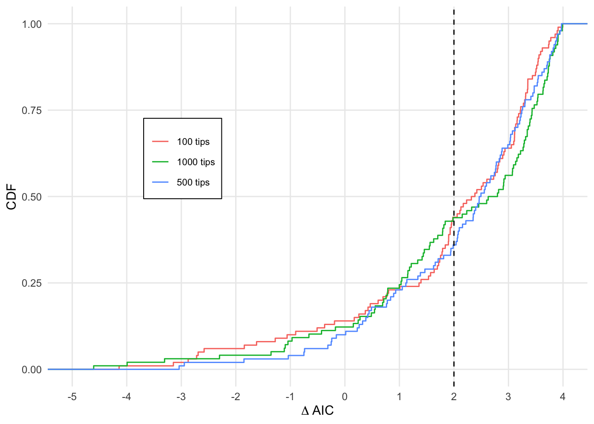

6 Semi-congruent Behavior
In this example, we simulated data using the CID4 model for three different scenarios: 100, 500, and 1000 tips. Subsequently, we conduct ML inference using two models: the original CID4 and the semi-congruent EHE8-C model. The CID4 model has four parameters, while the EHE8-C model has only two.
We observe that the likelihood of the CID4 model is always better than that of the EHE8-C model across all scenarios. However, due to fewer parameters, the AIC of the EHE8-C tends to be better in most trials.
It’s worth noting that lumping the semi-congruent EHE8-C model produces the CID4 model. In other words, if we create an irreducible model from the EHE8-C model, we obtain the original CID4 model with its four parameters.
##~~~~~~~~~~~~~~~~~~~~~~~~~~~~~~~~~~~~~~~
## ~ installations and dependencies ----
##~~~~~~~~~~~~~~~~~~~~~~~~~~~~~~~~~~~~~~~
source('R/utils/dependencies.R')
source('R/hiclasse/HiClaSSE-R.R') # pure R implementation of HiCLaSSE## [1] "Original matrix:"
## [,1] [,2] [,3]
## [1,] 1 4 7
## [2,] 2 5 8
## [3,] 3 6 9
## [1] "Matrix with right diagonal set to zero:"
## [,1] [,2] [,3]
## [1,] 1 4 0
## [2,] 2 0 8
## [3,] 0 6 9## [1] "Original matrix:"
## [,1] [,2] [,3]
## [1,] 1 4 7
## [2,] 2 5 8
## [3,] 3 6 9
## [1] "Matrix with right diagonal set to zero:"
## [,1] [,2] [,3]
## [1,] 1 4 0
## [2,] 2 0 8
## [3,] 0 6 9
## [1] TRUE
## [1] TRUE
## [1] TRUE
## [1] TRUE6.1 Setting-up Q matrices for inference
6.1.1 CID4
# trait
Q_t <- initQ(c(0,1), c(2, 2))
# diversification regime
Q_r2 <- initQ(c('A','B'), c(2,2))
# speciation rates for tracking the order
La4 <- diag(c(-3,-1),2)
La4 = La4 %x% diag(1,2)
# order according to regimes
Q_cid4.r <- amaSMM(Q_r2, Q_t)
# order according to trait
v=c(1,3, 2,4)
Q_cid4.t <- Q_cid4.r[v,v]
print(Q_cid4.r)## A0 A1 B0 B1
## A0 -4 2 2 0
## A1 2 -4 0 2
## B0 2 0 -4 2
## B1 0 2 2 -4## [,1] [,2] [,3] [,4]
## [1,] -3 0 0 0
## [2,] 0 -3 0 0
## [3,] 0 0 -1 0
## [4,] 0 0 0 -1## A0 B0 A1 B1
## A0 -4 2 2 0
## B0 2 -4 0 2
## A1 2 0 -4 2
## B1 0 2 2 -4## [,1] [,2] [,3] [,4]
## [1,] -3 0 0 0
## [2,] 0 -1 0 0
## [3,] 0 0 -3 0
## [4,] 0 0 0 -16.3 Maximum Likelihood
6.3.1 CID4 (4 pars)
Args <- list(
Nstates = 4L,
y = list(
c(0,0,0,0, 1,0,1,0),
c(0,0,0,0, 0,1,0,1)
))
newArgs <- makeArgs(Args)
#printArgsGlobal()
args <- argnames_HiClaSSE(4)
#args$arrays
#args$pars
#length(args$pars)
pars.hc <- rep(0, length(args$pars))
names(pars.hc) <- args$pars
pars.hc['lam000'] <- 0.1
pars.hc['lam111'] <- 0.1
pars.hc['lam222'] <- 0.05
pars.hc['lam333'] <- 0.05
pars.hc['mu0'] <-pars.hc['mu1'] <- pars.hc['mu2'] <- pars.hc['mu3'] <-0.1
qs <- extract_off_diagonal(Q_cid4.r)
qsl=length(qs)
pars.hc[c(length(pars.hc)-qsl+1):length(pars.hc)] <- qs
#pars.hc
#pars_to_arrays(pars.hc,4)
#args
zero.constr <- formulas_zero_pars(pars.hc)
f.qs <- assign_classes_pairwise(Q_cid4.r, args$arrays$Q)
f.mu <- c(mu1 ~ mu0, mu2 ~ mu0, mu3 ~ mu0)
f.lams <- c(lam111 ~ lam000, lam333 ~ lam222)
f.list<- c(zero.constr, f.qs, f.mu, f.lams)Run inference
#base="phy_CID4-100tips-100tr"
for (base in files_base[1:3]){
file=file.path("R/data", paste0(base, '.RDS'))
print(paste0('Reading file: ',file))
phy <- readRDS(file=file)
CID4 <- list()
#i=1
#which(is.na(phy))
for (i in 1:NSIM){
print(paste0('Working on: ', i))
tree <- phy[[i]]
states<- tree$tip.state
states<- mapvalues(states, from = c("0", "1", "2", "3"), to=c(0, 1, 0, 1) )
root <- c(1/4, 1/4, 1/4, 1/4)
lik.c <- make.HiClasse_cpp(tree, states, sampling.f=NULL, strict=TRUE, control=list(backend = "gslode"), newArgs)
lik.const <- constrain(lik.c, formulae = f.list)
arg.const <- argnames(lik.const)
starting.point <- pars.hc[arg.const]
CID4[[i]] <- find.mle(lik.const, starting.point, method="subplex", keep.func=F, root=ROOT.GIVEN, root.p=root, condition.surv=TRUE)
#CID4[[1]]$lnLik
}
file_out=paste0('R/data/lik-CID4-', base, '.RDS')
saveRDS(CID4, file= file_out)
}6.3.2 EHE8-C
lam1=0.3
lam2=0.1
q=0.2
mu=0.01
Args <- list(
Nstates = 8L,
y = list(
c(0,0,0,0,0,0,0,0, 1,0,1,0,1,0,1,0),
c(0,0,0,0,0,0,0,0, 0,1,0,1,0,1,0,1)
))
newArgs <- makeArgs(Args)
#printArgsGlobal()
args <- argnames_HiClaSSE(8)
#args$arrays
#args$pars
#length(args$pars)
pars.hc <- rep(0, length(args$pars))
names(pars.hc) <- args$pars
pars.hc['lam000'] <- pars.hc['lam002'] <- pars.hc['lam022'] <- lam1/3
pars.hc['lam200'] <- pars.hc['lam202'] <- pars.hc['lam222'] <- lam1/3
pars.hc['lam111'] <- pars.hc['lam113'] <- pars.hc['lam133'] <- lam1/3
pars.hc['lam311'] <- pars.hc['lam313'] <- pars.hc['lam333'] <- lam1/3
pars.hc['lam444'] <- lam2
pars.hc['lam555'] <- lam2
pars.hc['lam666'] <- lam2
pars.hc['lam777'] <- lam2
pars.hc['mu0'] <-pars.hc['mu1'] <- pars.hc['mu2'] <- pars.hc['mu3'] <- pars.hc['mu4']<- pars.hc['mu5']<- pars.hc['mu6']<- pars.hc['mu7'] <-mu
qs <- extract_off_diagonal(Q_ehe8_C.r/10)
qsl=length(qs)
pars.hc[c(length(pars.hc)-qsl+1):length(pars.hc)] <- qs
#pars.hc
#pars_to_arrays(pars.hc,8)
#args
zero.constr <- formulas_zero_pars(pars.hc)
f.qs <- assign_classes_pairwise(Q_ehe8_C.r/10, args$arrays$Q)
f.mu <- c(mu1 ~ mu0, mu2 ~ mu0, mu3 ~ mu0, mu4 ~ mu0, mu5 ~ mu0, mu6 ~ mu0, mu7 ~ mu0)
f.lams <- c(lam002 ~ q01, lam022 ~ q01,
lam200 ~ q01, lam202 ~ q01, lam222 ~ q01,
lam111 ~ q01, lam113 ~ q01, lam133 ~ q01,
lam311 ~ q01, lam313 ~ q01, lam333 ~ q01,
lam444 ~ q01, lam555 ~ q01, lam666 ~ q01, lam777 ~ q01,
lam000 ~ q01
)
f.list<- c(zero.constr, f.qs, f.mu, f.lams)Run inference
for (base in files_base){
file=file.path("R/data", paste0(base, '.RDS'))
print(paste0('Reading file: ',file))
phy <- readRDS(file=file)
EHE8_C <- list()
i=1
for (i in 1:NSIM){
print(paste0('Working on: ', i))
tree <- phy[[i]]
states<- tree$tip.state
states<- mapvalues(states, from = c("0", "1", "2", "3"), to=c(0, 1, 0, 1) )
root <- rep(1/8, 8)
lik.c <- make.HiClasse_cpp(tree, states, sampling.f=NULL, strict=TRUE, control=list(backend = "gslode"), newArgs)
lik.const <- constrain(lik.c, formulae = f.list)
arg.const <- argnames(lik.const)
starting.point <- pars.hc[arg.const]
EHE8_C[[i]] <- find.mle(lik.const, starting.point, method="subplex", keep.func=F, root=ROOT.GIVEN, root.p=root, condition.surv=TRUE)
#EHE8_C[[1]]$lnLik
}
file_out=paste0('R/data/lik-EHE8_C-', base, '.RDS')
saveRDS(EHE8_C, file= file_out)
}6.4 Results
cid <- tibble(
t100=get_item(readRDS(file='R/data/lik-CID4-phy_CID4-100tips-100tr.RDS'), 'lnLik') %>% get_aic(., 4),
t500=get_item(readRDS(file='R/data/lik-CID4-phy_CID4-500tips-100tr.RDS'), 'lnLik') %>% get_aic(., 4),
t1000=get_item(readRDS(file='R/data/lik-CID4-phy_CID4-1000tips-100tr.RDS'), 'lnLik') %>% get_aic(., 4)
)
ehe <- tibble(
t100=get_item(readRDS(file='R/data/lik-EHE8_C-phy_CID4-100tips-100tr.RDS'), 'lnLik') %>% get_aic(., 2),
t500=get_item(readRDS(file='R/data/lik-EHE8_C-phy_CID4-500tips-100tr.RDS'), 'lnLik') %>% get_aic(., 2),
t1000=get_item(readRDS(file='R/data/lik-EHE8_C-phy_CID4-1000tips-100tr.RDS'), 'lnLik') %>% get_aic(., 2)
)
cid.lik <- tibble(
t100=get_item(readRDS(file='R/data/lik-CID4-phy_CID4-100tips-100tr.RDS'), 'lnLik'),
t500=get_item(readRDS(file='R/data/lik-CID4-phy_CID4-500tips-100tr.RDS'), 'lnLik') ,
t1000=get_item(readRDS(file='R/data/lik-CID4-phy_CID4-1000tips-100tr.RDS'), 'lnLik')
)
ehe.lik <- tibble(
t100=get_item(readRDS(file='R/data/lik-EHE8_C-phy_CID4-100tips-100tr.RDS'), 'lnLik'),
t500=get_item(readRDS(file='R/data/lik-EHE8_C-phy_CID4-500tips-100tr.RDS'), 'lnLik'),
t1000=get_item(readRDS(file='R/data/lik-EHE8_C-phy_CID4-1000tips-100tr.RDS'), 'lnLik')
)MLE of CID is constantly better than MLE of the semi-congruent EHE8-C.
del.lik <- cid.lik-ehe.lik
# The positive values indicate that CID's MLE is better
# There are only positive values
apply(del.lik, 2, min)## t100 t500 t1000
## 0.004118721 0.013512631 0.003768857However, in most trials EHE8-C has better AIC.
library(ggplot2)
library(dplyr)
library(tidyr) # Load tidyr package
del <- cid-ehe
# Calculate ECDF for each column
ecdf_del <- del %>%
summarise(
t100_ecdf = ecdf(t100),
t500_ecdf = ecdf(t500),
t1000_ecdf = ecdf(t1000)
)
# Create a data frame for plotting
ecdf_data <- data.frame(
Value = c(del$t100, del$t500, del$t1000),
Group = rep(c("100 tips", "500 tips", "1000 tips"), each = nrow(del))
)Proportion of trials with dAIC>2.
## [1] 0.56## [1] 0.64## [1] 0.55Plot
# Plot the ECDFs for each group
cdf_plot <-ggplot(ecdf_data, aes(x = Value, color = Group)) +
stat_ecdf(geom = "step") +
labs(x = expression(Delta~AIC), y = "CDF") +
theme_minimal() +
scale_x_continuous(
limits = c(-5, 4),
breaks = seq(-5, 4, by = 1)
) +
theme(
panel.grid.minor.x = element_blank(), # Remove minor grid lines on the x-axis
panel.grid.minor.y = element_blank()
) +
guides(color = guide_legend(title = NULL)) +
geom_vline(xintercept=2, linetype="dashed", color = "black", size=.5) +
theme(
#plot.background = element_rect(fill = "white"),
#panel.background = element_rect(fill = "white"),
legend.box.background = element_rect(fill = "white"),
legend.text = element_text(size = 8),
legend.position = c(0.25, 0.60)
)
cdf_plot## Warning: Removed 2 rows containing non-finite values (`stat_ecdf()`).